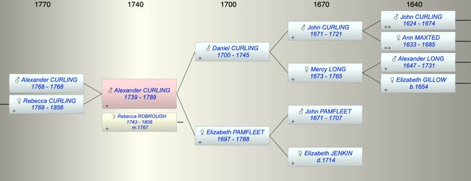

| [Index] |
| Alexander CURLING (1739 - 1789) |
|  |
| b. 1739 at St Laurence |
| m. 30 Jun 1767 Rebecca ROBROUGH (1743 - 1808) at St Saviour Southwark |
| d. 1789 aged 50 |
| Parents: |
| Daniel CURLING (1700 - 1745) |
| Elizabeth PAMFLEET (1697 - 1788) |
| Siblings (5): |
| Elizabeth CURLING (1724 - 1724) |
| Mercy CURLING (1727 - 1727) |
| Daniel CURLING (1730 - 1818) |
| John CURLING (1732 - 1804) |
| William CURLING (1742 - 1823) |
| Children (2): |
| Alexander CURLING (1768 - 1768) |
| Rebecca Ann CURLING (1769 - 1856) |
| Grandchildren (7): |
| Thomas HART (1795 - ), Alexander HART (1799 - ), Rebecca HART (1801 - 1801), John HART (1803 - ), Charles HART (1805 - ), Marianna HART (1806 - ), Elizabeth HART (1809 - ) |
| Events in Alexander CURLING (1739 - 1789)'s life | |||||
| Date | Age | Event | Place | Notes | Src |
| 1739 | Alexander CURLING was born | St Laurence | Note 1 | ||
| 06 Mar 1745 | 6 | Death of father Daniel CURLING (aged 45) | St Laurence | Note 2 | |
| 30 Jun 1767 | 28 | Married Rebecca ROBROUGH (aged 24) | St Saviour Southwark | Note 3 | |
| 1768 | 29 | Birth of son Alexander CURLING | |||
| 1768 | 29 | Death of son Alexander CURLING | |||
| 31 Mar 1769 | 30 | Birth of daughter Rebecca Ann CURLING | Bermondsey | Note 4 | |
| 31 Jan 1788 | 49 | Death of mother Elizabeth PAMFLEET (aged 91) | St Laurence | aged 90 ex MI | |
| 1789 | 50 | Alexander CURLING died | Will probate 1789 | ||
| Personal Notes: |
|
Alexander Curling Lieutenant of his Majesty’s ship Prince George refers to his dear wife Rebecca. No children mentioned WIlliam Curling and Robert Ellis were witnesses. WIll made 1778 Probate 1789.
According to Cotton Alexander had another daughter MAry and two further sons WIlliam and John but we have not confiirmed these. |
| Created on a Mac™ using iFamily for Mac™ on 8 Oct 2023 |